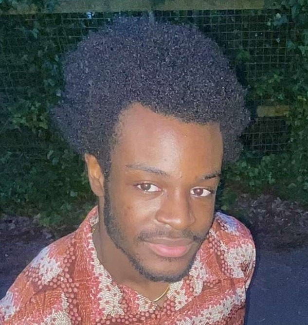

Hello!
I'm
Femi,
a third-year CS and Philosophy student
at the University of St. Andrews.
I'm currently focusing on full-stack Roblox game development with Lua,
and I am experienced in full-stack app development for Android apps
written in Kotlin and/or Java.
I also love reading manga and graphic novels: your Friendly Neighbourhood Weeb™.
I also design chassis for small-scale formula style racing cars
to be built, tested, and raced.